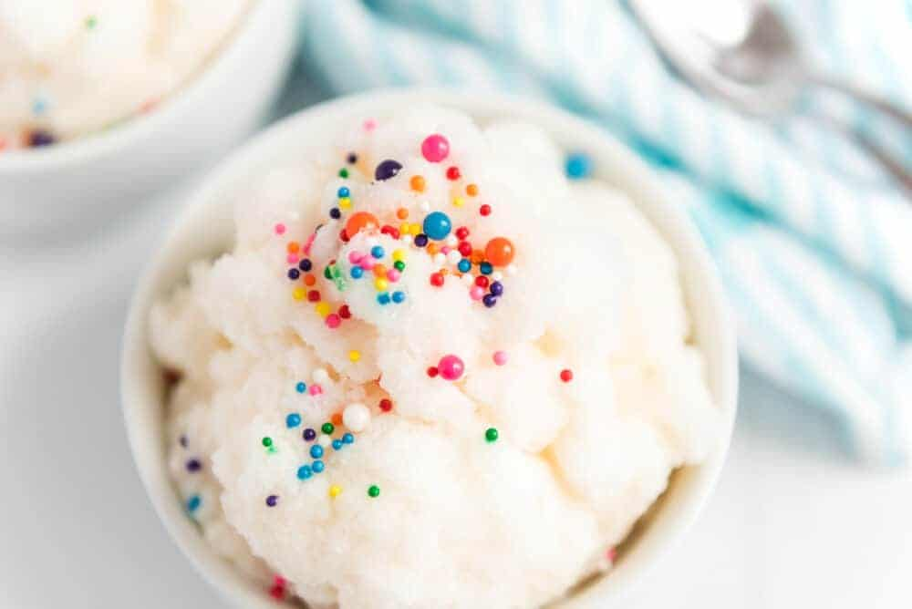

Snow Ice Cream

Description
This is such a fun way to celebrate winter and the beauty it brings by eating it. Be sure to use fresh snow!
Ingredients
- 1 cup of milk (any kind)
- 1/3 cup granulated white sugar
1 tsp vanilla extract
- 1 pinch fine sea salt
- 8 cups (more or less) clean snow or shaved ice
- Any toppings you might want to add: chocolate chips, jimmies, or caramel syrup
Steps
- In a large bowl, whisk milk, sugar, vanilla, and salt together until combined. Stir in the snow until
you reach your desired consistency. Top with desired toppings.
- Eat up! It melts quickly so enjoy immediately.